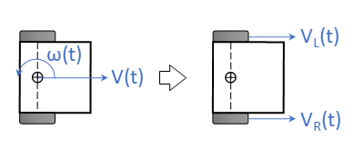

|
Smart Car Controller
1.0
LIbrary to manage a Smart Car Robot
|
|
Smart Car Controller
1.0
LIbrary to manage a Smart Car Robot
|
Two wheeled robots are very maneuverable, but steering them requires each of the independent wheels to rotated at different speeds (call them vL and vR for the left and right side). Managing vL and vR independently to achieve a specific path is cumbersome and complex.
The unicycle model of an autonomous robot is a kinematic model that allows us to model the movement of the vehicle using a linear velocity vector (v) and a rotational speed (w) about a point within the vehicle. Specifying a movement path in this model becomes much easier ("How fast do we want to move forward and how fast do we want to turn").

v and w can be transformed into independent motor speeds (vL and vR) using the following formulas:
References